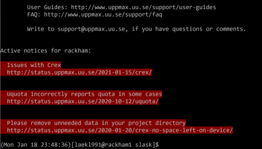

Basic toolkit

Objectives
Let’s dig into the most important BASH commands
We’ll do a type-along session
We will cover these commands
Read files and change file properties
catprint content on screenheadprint first parttailprint last partlessbrowse contenttarcompress or extract filechmodchange file permissionsmaninfo about a command
Copy, Create, Move
mkdir — make directories
Warning
Make sure you’re in your home directory by
cd ~
Create a new directory
uppmax-intro
$ cd ~
$ mkdir uppmax-intro
Go in there:
$ cd uppmax-intro/
cp — copy files and directories
Copy files with:
cp <source> <target>Set target to
.to keep name and to point at present directory.
$ cp /proj/introtouppmax/labs/linux_tutorial/ .
Well, that didn’t work. What does the error say?
So… try
$ cp -r /proj/introtouppmax/labs/linux_tutorial/ .
-r is for recursive, meaning including files and subdirectories!
Move to your just created
linux_tutorial/
$ cd linux_tutorial
Make a copy of the file “newfile” in the same directory:
$ cp newfile copyfile
scp —secure copy (remote file copy program)
Linux/MacOS: To copy data to/from Rackham, you can use
scpfrom the terminal on your local machine:Upload from present directory on local machine to your home directory on cluster.
Example (not done by us today)
[bob@macbook]$ scp myinput bob@rackham.uppmax.uu.se:~/copyofmyinput
[bob@macbook]$ scp myinput bob@rackham.uppmax.uu.se:~/ # (keeping filename)
Download
[bob@macbook]$ scp bob@rackham.uppmax.uu.se:~/mydata copyofmydata
[bob@macbook]$ scp bob@rackham.uppmax.uu.se:~/mydata . # (keeping file name)
mv — move/rename file
Moving files works just like copying files:
mv <source> <target>Move the copy you just made to another place:
$ mv copyfile ../
Rename it.
$ mv ../copyfile ../renamedfile
Archiving
tar — archiving and compression
We’re going to need more files. Let’s extract the tar.gz file (tared and gzipped file)
$ tar -vxzf files.tar.gz
The flags mean: - verbosely - extract - gzipped - filename
Order of flags may matter!
fshould be in the start or in the end!
You should see a list of files being extracted
Tip
To compress use the flag
-cinstead of-x
$ tar -czfv <tar file> <path/to/directory/file(s)-or-directory>
Deleting
rm — delete files or directories
Note
Tip: make “rm” ask if you really want to erase:
Within a session: Type in the command prompt
alias rm='rm -i'
Override asking with
rm –f <>
Edit file “.BASHrc” in /home directory by adding the alias line for this to start every time.
This will also work for mv and cp!
Deleting files works just like copying or moving them:
rm <target>Try it out:
$ rm ../renamedfile
$ rm this_is_empty
hmmmm…
rmdir — delete an empty directory
We need another command to delete directories
$ rmdir this_is_empty
$ rmdir this_has_a_file
Again??
Is there a way to use rm to delete directories?
Solution
Recursive commands
-rare applied to directories and their contents
$ rm -r this_has_a_file
Help
man — manual, look up the right flags
Nobody can remember whether it’s
-Ror-rfor recursive, or if-flets you choose a file or forces an action.
$ man ls
shows you how to use
lsand all its optionsType
/<keyword>to search for a keyword, usen(forward) and ´N` (backward) to scan through hits.Scroll with arrows.
Type
qto quit.
Exercise
Spend some time now to browse the man pages for the commands you’ve just learned!
Let’s get wild with Wildcards

$ ls many_files
$ ls many_files/*.txt
$ ls many_files/file_1*1.docx
Want to clean out temporary files ending in .tmp in all the subdirectories?
Warning
NB! It could be wise to do
ls -a */*.tmpfirst to see what will be deleted…
$ rm */*.tmp
Exercise
Exercise: Create a new directory and move all .txt files in many_files to it.
Reading files
In Linux, you can (if you wish) also display files without being able to change them
$ cd old_project
$ ls
Hmm, which of these files are useful?
cat - concatenate files and print on the standard output

catdumps the contents of files to the terminal as text
$ cat the_best
Yummy!
$ cat a
What’s this???
Concatenate files with this wizardry:
$ cat a the_best > combinedfiles.txt
File
ais written first andthe_bestis appended
head — display the top (heading) of a file

$ head a
You can choose how many lines to display (default 10)
$ head -n 4 a
tail — display the end of a file

Tail is the same as head, but for the other end.
$ tail -n 5 a
Handy to look at log files or to figure out the structure of a text file.
less — read a whole file
cat doesn’t really work for long files
$ less a
Search with
/<keyword>andn/NHit
qto quit.scroll with arrows.
manusesless!“less is more”
File permissions

Example
$ ls -l
drwxrwxr-x 2 marcusl marcusl 4096 Sep 19 2012 external_hdd
-rwxr-xr-x 1 marcusl marcusl 17198 Jul 16 14:12 files.tar.gz
Leading symbol:
ddirectory-regular filelsymbolic link (more on this tomorrow)Others exist, but you can ignore them for now
$ ls -l drwxrwxr-x 2 marcusl marcusl 4096 Sep 19 2012 external_hdd -rwxr-xr-x 1 marcusl marcusl 17198 Jul 16 14:12 files.tar.gz
Three sets of “rwx” permissions
rwx: r ead, w rite, ex ecute
User: the user account that owns the file (usually the one that created it)
Group: the group that owns the file (usually the project group in /proj/xyz or the user’s group elsewhere)
Others: everyone else on the system (literally a thousand strangers)
r – read
Files: Read the contents of the file
Directories: List the files in the directory
w – write
Files: Modify the file
Directories: Add, rename, or delete files in the directory
x – execute
Files: Run the file as a program
Directories: Traverse the directory (e.g. with “cd”)
For the interested
Now try:
$ ls -l /proj/introtouppmax/
Huh,
rwxrwsr-x?sin the group meansxbut with gid bit set ( g roup id of creator not launcher).The s or sticky bit is a group permission on directories which changes the default behaviour of new files are created with the same group_id as the users group_id to new files inheriting the group_id from the parent directory.
Smeans-with gid bit set (rarely seen).Among other things, this makes the default group for new files/subdirectories the, for instance,
p_introtouppmaxgroup.
Changing permissions
chmod — change file mode bits
If you own, i.e. created, the file or directory, you can modify the content
Common issues
Files with
wcan be modified and destroyed by accident. Protect your data!If you want to share data or scripts with a person not in your project (e.g. support staff like me), you can!
If you want to keep non-members from even seeing which files you have, you can!
Syntax
chmod <mode> <files>
<mode>is of the form: For whom, Modify, What permission(s)For whom?
u: user/ownerg: group, often the members to a certain projecto: othersa: allif not set changes are applied for user AND group
Modify?
+: add permissions,-: remove=: set equal to=usually causes unmentioned bits to be removed except that a directory’s unmentioned set user and group ID bits are not affected.
What permissions?
r,w,x, i.e. the actual permission
Examples
<mode>can be e.g.:u+x: lets You (owner) run a script you just wrote-w: no write permissions for owner+groupwarning: if
wwas already set for others it will be kept!!+rw: let user and group members read and edit this file, not others if not already set=xw: let group members go into your directory and put files there, but not see which files are there, others are not affecteda=xw: set xw for everyone
chmod takes flags as usual, e.g.
-Rfor recursive (i.e. all files and sub-directories therein)
chmod 755 style - binary sum - “octal bit mask”
Online, you will come across e.g.
chmod 755 <file/dir>. What does this mean? It’s an “octal bit mask”:Each digit corresponds to the binary sum for the owner, group and others, respectively.
7 = 4 + 2 + 1 = r + w + xAll permissions5 = 4 + 0 + 1 = r + + xRead and execute permission
755 then means all permissions for owner, but limiting write permissions for the group and all others
What number would
rwbe?
Solution
6
chmod — Hands-on
In your locally created
linux_tutorialdirectory, find important files and old saved data that you wouldn’t want to lose (imagine).Directories: important_results/, old_project/
File: last_years_data
Use chmod to remove write permission from those files and directories (use the
-Rflag (not-r) to also do the files in the directories).Take a moment to play around with chmod and explore the effects of permissions on files and directories.
Solution
$ chmod -wR <target>
More about BASH command line and scripts on Tuesday and Wednesday!